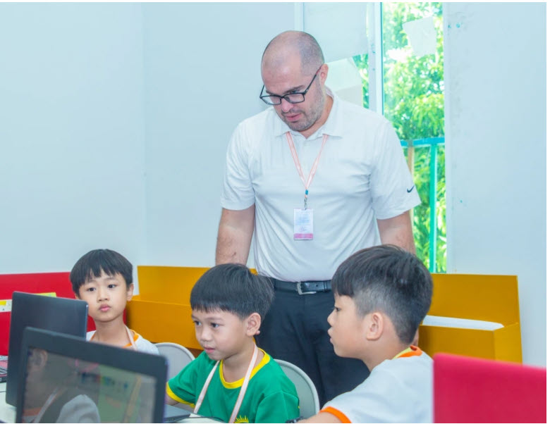
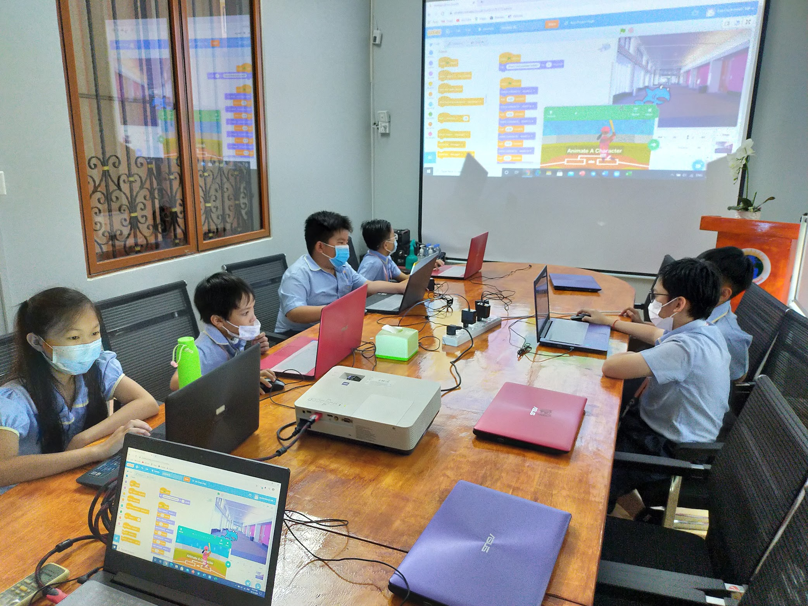

In 2013 I quit my job as a Front Office Supervisor at a resort in Scottsdale, Arizona to teach English in Asia. I signed up for a month long TESOL course and then got a job teaching kindergarten at a small primary school in Phnom Penh, Cambodia. This decision changed my life forever. I ended up staying in Asia for the next eight years working in a variety of roles in education. I taught English at Sunrise School for my first two years in Cambodia. I then taught Grade 6 for one year at another school in Phnom Penh. Then I got a job at VIPKid where I taught English online, to students in China. This job allowed me to work anywhere with internet access. I ended up moving to the Philippines with Meziel and our son for a little over two years. I would work as much as I could for nine days and then take four days off to travel to a nearby island or beach. Meizel was happy to be near her family and we had a lot of time to travel.
I knew that I didn't want to teach English online forever, so I started thinking about what to do next. I took another TESOL course, this time online and was amazed at the way a course could be delivered online. This, along with my experience teaching online helped me decide to pursue a career in educational technology. I started a Master of Educational Technology program online at Boise State University. My family and I then moved to Thailand. Both Meizel and I got jobs in Thailand and worked there for about 8 months. However, we decided that we wanted to move back to Cambodia.

When we got back to Cambodia, I got a job as the English Program Coordinator at Sunrise School (the same school I had worked for my first two years in Cambodia). My goal was to use technology to improve learning outcomes in the school. I started a kids coding program and introduced a learning management system to the older students in the school. I taught the students the basics of coding using Scratch, and started introducing more tachnology into their assignments. Things were going smoothly until March 2020...
That is when I became the distance learning coordinator. I designed and rolled out our online learning program in response to COVID-19. I trained all of the teachers and staff how to use the Schoology LMS to assign work and collect assignments. I selected Zoom as our method of delivering face-to-face virtual classes. We stayed online for the next year and a half. During that time the students became digital natives. Students from Grade 1 - 6 learned coding with Scratch. (See examples of some student created projects to the right). I also introduced a Geography program to the surriculum and focused on imporving the students' problem solving skills. While studying online for such a long time was a challenge for young learners, I believe that the program helped the students develop intellectually. In July of 2021, I moved back to the US to help my mother who was getting treatment for cancer. I continued to teach the students in Cambodia, online for another six months. However, I had gotten my current job at SAIS, and was taking classes at BU, so I had to leave Sunrise School. The time spent teaching abroad, especially my time at Sunrise School, shaped me into the person that I am today.
